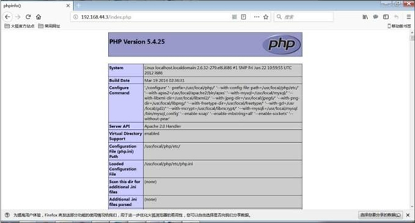

Linux安装PHP过程详解
虽然“新事物取代旧事物”是必然趋势，但就目前来说，PHP 7 版本还是太新了，很多企业的网站不一定兼容。因此，本节安装的 PHP 版本为 5.4。接下来，就一起来学习如何在 Linux 系统中安装 PHP 源码包，具体步骤如下。
1) 安装libtool和libtool-ltdl
[root@localhost mysql]# yum -y install "libtool*"
[root@localhost mysql]# yum -y install "libtool-ltdl*"
2) 手工修改gd库文件
PHP 5.4 也有一些 Bug，在检测 gd 库时会报错，需要我们手工修改。命令如下：
[root@localhost mysql]# vi /usr/local/gd2/include/gd_io.h
#修改gd_io.h头文件
typedef struct gdIOCtx
{
…
void (*data);
#在此程序段中加入此句
}
3) 编译安装 PHP 源码包
命令如下：
[root@localhost mysql]# cd /usr/local/src/ php-5.4.25
[root@localhost php-5.4.25]# ./configure \ #编译前配置
--prefix=/usr/local/php/ \ #指定安装位置
--with-config-file-path=/usr/local/php/etc/ \ #指定PHP配置文件位置
--with-apxs2=/usr/local/apache2/bin/apxs \ #调用apache2
--with-mysql=/usr/local/mysql/ \ #调用mysql
--with-libxml-dir=/usr/local/libxml2/ \ #调用libxml2库
--with-jpeg-dir=/usr/local/jpeg6/ \ #调用jpeg库
--with-png-dir=/usr/local/libpng/ \ #调用libpng库
--with-freetype-dir=/usr/local/freetype/ \ #调用freetype库
--with-gd=/usr/local/gd2/ \ #调用gd库
--with-mcrypt=/usr/local/libmcrypt/ \ #调用libmcrypt库
--with-mysqli=/usr/local/mysql/bin/mysql_config \#增加MysqlLi功能
--enable-soap \ #支持SOAP和Web Services
--enable-mbstring=all \ #支持多字节字符串
--enable-sockets #支持socket（套接字）通信
--with-pdo-mysql=/usr/local/mysql #启用mysql的pdo模块支持
[root@localhost php-5.4.25]# make
#编译
[root@localhost php-5.4.25]# make install
#编译安装
4) 建立PHP配置文件
和 MySQL 一样，这个配置文件不用手工建立，也是有模板文件的，我们只需复制即可。命令如下：
[root@localhost php-5.4.25]# cp /usr/local/src/ php-5.4.25/php.ini-production
/usr/local/php/etc/php.ini
5) 让apache可以识别“.php”扩展名
在安装 PHP 时，在 ./configure 命令中使用 --with-apxs2=/usr/local/apache2/bin/apxs 选项，已经把 PHP 作为模块被 apache 识别了。不过，apache 并不知道哪些扩展名的文件要调用 PHP 模块来解析（如果是 apache 不认识的扩展名，那么客户端在访问时，apache 不会尝试解析，而是提示客户端下载），所以我们需要修改 apache 的配置文件，让 apache 可以认识 PHP 脚本的扩展名。比如，我们想让 apache 在遇到“.php”和“.phps”扩展名时，调用 PHP 模块来解析这些文件的内容，那么我们只需要执行如下命令：
[root@localhost php-5.4.25]# vi /usr/local/apache2/etc/httpd.conf
#修改apache配置文件，加入如下内容
AddType application/x-httpd-php.php.phps
#这句话的意思是：如果遇到.php和.phps扩展名，则调用PHP模块来解析这个文件的内容
[root@localhost php-5.4.25]# vi /usr/local/apache2/etc/httpd.conf
…省略部分输出…
# If the AddEncoding directives above are commented-out， then you probably should define those extensions to indicate media types：
#
AddType application/x-compress .Z
AddType application/x-gzip .gz .tgz
AddType application/x-httpd-php .php .phps #加载到此位置
…省略部分输出…
6) 重启Apache服务器
我们修改了 apache 的配置文件，如果想让这个修改生效，那么必须重启 Apache 服务器。重启命令如下：
[root@localhost php-5.4.25]# /usr/local/apache2/bin/apachectl stop
[root@localhost php-5.4.25]# /usr/local/apache2/bin/apachectl start
7) 测试PHP环境是否正常
对源码包安装的 apache 来讲，网页的默认保存位置是 /usr/local/apache2/htdocs/ 目录。为了测试 PHP 环境是否正常，我们需要在这个目录中建立一个 PHP 文件，看看这个文件是否可以正常显示。命令如下：
[root@localhost php-5.4.25]# vi /usr/local/apache2/htdocs/index.php
<?php
phpinfo();
?>

图 1 phpinfo测试页
如果能看到图 1，那么恭喜你，PHP 安装成功。
关注公众号「站长严长生」，在手机上阅读所有教程，随时随地都能学习。内含一款搜索神器，免费下载全网书籍和视频。

微信扫码关注公众号